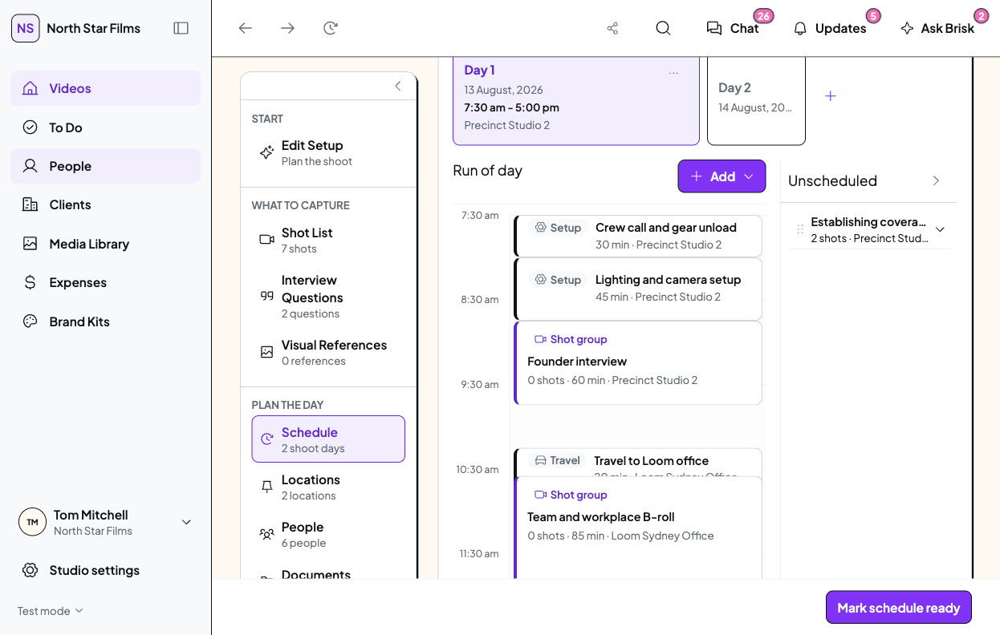
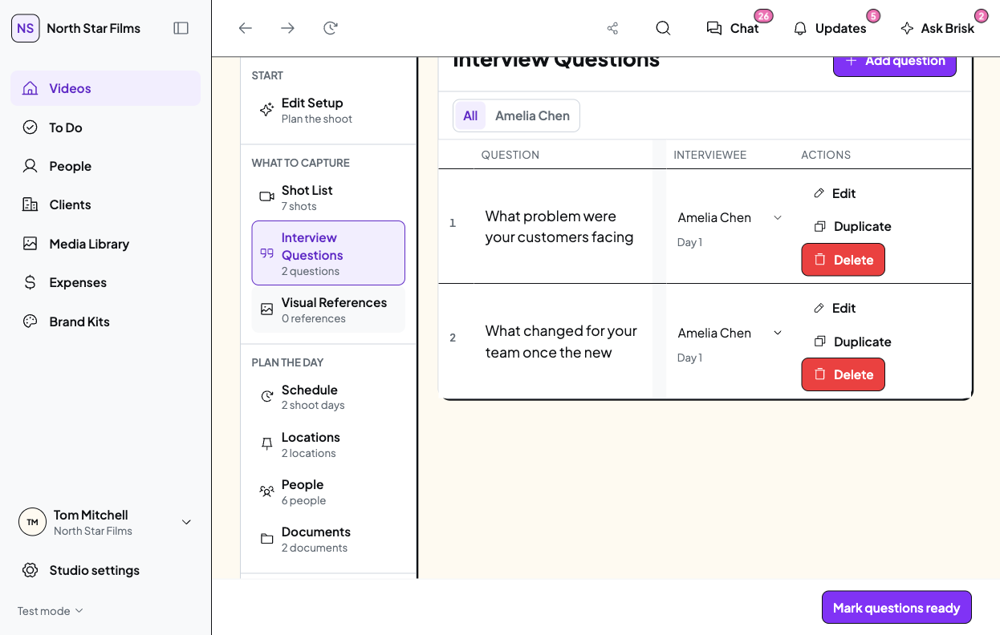

30 October 2026 · Current prototype · Proposal only
Shoot scheduling: focused refinements
Keep the existing day tabs, timeline, unscheduled backlog and inline questions. Two visual issues are reproduced in the current prototype. The drag/resize issue retains the same source risk, but its fresh pointer reproduction was inconclusive.
1. Short items should occupy their real time
Observed: Travel is scheduled for 20 minutes and ends exactly when B-roll starts. Its minimum visual height produces a 16px overlap, hiding content beneath the next block. This is a display collision, not a real scheduling clash.

Current prototype · Studio Staff · approximately 1133 CSS px · Day 1. Full original screenshot retained. Travel/B-roll overlap is visible near 10:30.Recommended: retain the true duration footprint. Use one compact title/duration line for sub-30-minute items. Keep full start/end time and location available in details and the existing hover/focus treatment. Taller items keep richer information.
Proposed short-event content: Travel to Loom office · 20 min
Preserve actual times, timeline scale, genuine clash warnings, click-to-edit and keyboard access. Do not stretch durations or move consecutive items into false clash lanes merely to fit extra text.
2. Read the whole interview question
Observed: at 1133px, each existing question needs 104px of text height, but its field is 56px high with hidden overflow. The producer cannot read the complete wording at rest.

Current prototype · Studio Staff · two existing questions. No question text was edited for this check.Recommended: let the existing inline field grow to the question’s full height, including after editing or changing desktop width. Keep interviewee/day assignment and current row actions.
The wide desktop view already reads correctly. This is a targeted narrow-desktop correction; a new question-card layout or extra expand clicks are unnecessary.
3. A move or resize should finish that action
Current evidence: the canvas still creates an item without checking the entry’s completed-gesture suppression. Resize also lacks equivalent suppression. This matches the historical failure path.
Verification gap: the fresh pointer replay failed partway through. Crew call moved to 7:45 in the disposable demo, and no blank Add dialog was observed. This review does not claim a successful current reproduction.
Recommended: consume the click produced by a completed move or resize before either Add or Edit handles it. An ordinary click should still edit the item; clicking genuinely empty time should still add one.
Before declaring a fix verified: repeat real move, resize, ordinary entry click and empty-space click, including clash and no-clash cases. Preserve snapping and existing immediate persistence.
Recommended batch
These three bounded fixes, with no wider Shoot redesign. Start with gesture handling, then honest short-event layout, then question auto-sizing. Review the resulting desktop screens together before moving on.
Application code, typed mock records, assets and dependencies are unchanged. The working browser’s data was not operated on. No call sheet was published or sent.
Evidence, source locations and verification requirements
Awaiting Tom’s approval before implementation.